3.2. Hypnogram-based analysis
Given staging annotations (whether manually derived or from automated analysis), Luna has a suite of commands for summarizing the implied hypnograms:
-
to report core sleep macro-architecture metrics, such as total sleep time (TST), sleep efficiency, stage durations, REM latency, sleep midpoint, etc
-
to apply a heuristic to derive NREM cycles
-
to set flags for potentially unusual staging (e.g. starts in sleep, etc)
-
to add annotations to a dataset based on various properties of the hypnogram (e.g. sleep cycle, etc) that can subsequently be used to selectively slice-and-dice the recording
-
to output metrics on stage transitions, bout duration statistics, and gross timing metrics
-
to classify epochs with respect to hypnogram properties, e.g. proximity to a stage transition, reative position within the spanning sleep cycle, etc
-
optionally, to constrain analyses to fixed periods of the recording, which can be useful when dealing with truncated recordings, for example; also, to "edit" hypnograms prior to analysis (e.g. removing very short intervals of sleep that occur many hours before the main sleep period, or changing stages based on lights off/on times)
We'll only consider a subset of this functionality here: full
documentation is available on the main website for the
HYPNO command.
Checking the inputs
As noted above, by
default Luna defines epochs of 30 seconds from the EDF start, assuming
that stage annotations will align with those epochs (i.e. assuming
that epochs are not spanned by more than one stage annotation). If
stage annotatons are aligned differently (e.g. starting at some
arbitrary offset into the EDF, which can be especially common with
gapped EDF+D files), this will lead to "conflicts" when running
commands such as HYPNO.
However, here we've previously updated the gapped files that had
alignment issues, so we don't expect any conflicts. If we hadn't
done that, now adding EPOCH align first should address these
assuming there aren't more fundamental problems with the staging,
e.g. if the annotation file itself contains overlapping, inconsistent
annotations. But, here, the basic HYPNO command alone should be free
of CONF epochs, which we see, is indeed the case:
luna harm1.lst -o out.db -s HYPNO
destrat out.db +HYPNO -v CONF
ID CONF
F01 0
F02 0
F03 0
F04 0
F05 0
F06 0
F07 0
F08 0
F09 0
F10 0
M01 0
M02 0
M03 0
M04 0
M05 0
M06 0
M07 0
M08 0
M09 0
M10 0
As expected, we now do not see any conflicts. This is a prerequisite for meaningful hypnogram-based analyses.
Core hypnogram statistics
We can now look at some standard statistics: e.g. stage durations
destrat out.db +HYPNO -c SS/N1,N2,N3,R,W -v MINS
ID MINS.SS_N1 MINS.SS_N2 MINS.SS_N3 MINS.SS_R MINS.SS_W
F01 27.5 180.5 74 59 80.5
F02 18 208 72.5 90 31
F03 36.5 111 86 51 150.5
F04 25.5 189 84.5 69 67
F05 39 190 70.5 57 91.5
F06 22.5 223 67.5 76 19.5
F07 12.5 213 21 70.5 155
F08 54 183 51.5 65.5 67
F09 22 238.5 31.5 73.5 24
F10 40.5 213 42 73.5 91.5
M01 51 296 30.5 21 39.5
M02 15 152 5.5 8.5 48.5
M03 41 217 60 90 61
M04 49.5 172 80 51.5 122.5
M05 42 296.5 41.5 37.5 49
M06 35.5 217.5 31.5 66 106
M07 20 217 48.5 32 181.5
M08 32 210.5 48 35.5 165
M09 22.5 236 128.5 61 40.5
M10 86 203.5 40 57 59
For clarity of output, we only extracted a subset of the "stage" labels (and used the -c option rather than
-r to make a table with different strata represented by columns versus rows). Luna also defines some other
labels that can be useful to summarize/extract:
NRany NREM epochSany sleepWASOwake after sleep onsetLlights off?unknown epoch
destrat out.db +HYPNO -c SS/NR,S,WASO,L,? -v MINS
ID MINS.SS_? MINS.SS_L MINS.SS_NR MINS.SS_S MINS.SS_WASO
F01 0 0 282 341 39.5
F02 0 11 298.5 388.5 12
F03 0 0 233.5 284.5 125
F04 0 3.5 299 368 49.5
F05 0 0 299.5 356.5 71
F06 0 0 313 389 13
F07 0 0 246.5 317 145.5
F08 0 0 288.5 354 33.5
F09 0 0 292 365.5 23.5
F10 0 0 295.5 369 36.5
M01 0 0 377.5 398.5 34.5
M02 0 213 172.5 181 21.5
M03 0 0 318 408 35
M04 0 0 301.5 353 72
M05 0 0 380 417.5 49
M06 0 0 284.5 350.5 104.5
M07 0 0 285.5 317.5 102.5
M08 0 0 290.5 326 153.5
M09 0 0 387 448 25.5
M10 0 0 329.5 386.5 49.5
One thing to note in the above table: although no formal lights
off/on annotations were specified for this project, by default Luna
sets the lights (L) stage annotation for epochs that a) do not have
any other staging and b) occur before or after the sleep period. Note
that M02 appears to have a relatively long duration (213 minutes),
which would be worth following up (hint: this relates to the seemingly
truncated study we encountered during the previous step...).
It is beyond the scope of this walkthrough to review all outputs, which are defined here, but to give a sense of the overall (and below, stage-specific) metrics for each individual:
destrat out.db +HYPNO -i M07 | behead
ID M07
CONF 0
E0_START 0
E1_LIGHTS_OFF 0
E2_SLEEP_ONSET 79
E3_SLEEP_MIDPOINT 289
E4_FINAL_WAKE 499
E5_LIGHTS_ON 499
E6_STOP 499
EINS 1
FIXED_LIGHTS 0
FIXED_SLEEP 0
FIXED_WAKE 0
FWT 0
HMS0_START 22:00:00
HMS1_LIGHTS_OFF 22:00:00
HMS2_SLEEP_ONSET 23:19:00
HMS3_SLEEP_MIDPOINT 02:49:00
HMS4_FINAL_WAKE 06:19:00
HMS5_LIGHTS_ON 06:19:00
HMS6_STOP 06:19:00
LOST 0
LOT 0
LZW 0.126967471143757
LZW3 0.0902413431269675
NREMC 4
NREMC_MINS 94.25
OTHR 0
POST -0.5
PRE 79
REM_LAT 91
REM_LAT2 76.5
SE 63.627254509018
SFI 0.151181102362205
SINS 0
SME 75.5952380952381
SOL 79
SOL_PER 80
SPT 420
SPT_PER 419
T0_START 22
T1_LIGHTS_OFF 22
T2_SLEEP_ONSET 23.3166666666667
T3_SLEEP_MIDPOINT 26.8166666666667
T4_FINAL_WAKE 30.3166666666667
T5_LIGHTS_ON 30.3166666666667
T6_STOP 30.3166666666667
TGT 0
TIB 499
TI_RNR 0.0062992125984252
TI_S 0.116535433070866
TI_S3 0.235714285714286
TRT 499
TST 317.5
TST_PER 203
TWT 181.5
WASO 102.5
Stage-specific example outputs (N2 only here), with manually added descriptions for convenience:
destrat out.db +HYPNO -r SS/N2 -i M07 | behead
ID M07
SS N2
BOUT_05 177 minutes of N2 occuring in bouts of at least 5 mins
BOUT_10 140 minutes of N2 occuring in bouts of at least 10 mins
BOUT_MD 2.5 median N2 bout duration
BOUT_MN 5.564 mean N2 bout duration
BOUT_MX 32 maximum N2 bout duration
BOUT_N 39 number of N2 bouts
DENS 0.516 N2 "density" (proportion of _sleep period time_ (SPT) that is N2)
MINS 217 N2 absolute duration (minutes of N2)
PCT 0.683 N2 relative duration (proportion of sleep epochs that are N2)
TA 0.643 timing statistic: N2 relative to all epochs (lower = earlier)
TS 0.615 timing statistic: N2 relative to all sleep epochs (lower = earlier)
Hypnogram-based annotations
We'll use this later in the
walkthrough when looking at
ultradian dynamics in the sleep EEG, but here we'll note that the
HYPNO command can add various
annotations
on-the-fly, that can be used by subsequent
MASK,
EPOCH or
similar commands in the same run (or saved to a file via
WRITE-ANNOTS.
For example, to stratify analyses of N2 sleep by the first four NREM
cycles, here running for one individual (F02) and one channel (Cz)
for illustration:
luna harm1.lst -o out.db id=F02 \
-s ' HYPNO annot
MASK ifnot=N2 & RE
TAG CYC/1 & MASK ifnot=h_cycle_n1
PSD sig=CZ dB
TAG CYC/2 & MASK ifnot=h_cycle_n2
PSD sig=CZ dB
TAG CYC/3 & MASK ifnot=h_cycle_n3
PSD sig=CZ dB
TAG CYC/4 & MASK ifnot=h_cycle_n4
PSD sig=CZ dB '
A few minor syntactical points:
-
the
TAGadds a factorCYCto the output, with levels1,2,3and4, which disambiguate what would otherwise be "overlapping" output from repeated runs ofPSD -
the
PSDcommand respects current masks (i.e. one does not need to restructure the data withRE)
Looking at the output, e.g. just for delta power, stratified by cycle (the -p 3 option restricts numeric output to 3 decimal places):
destrat out.db +PSD -r B/DELTA CH CYC -p 3
ID B CH CYC PSD RELPSD
F02 DELTA CZ 1 25.582 0.455
F02 DELTA CZ 2 24.356 0.379
F02 DELTA CZ 3 23.093 0.267
F02 DELTA CZ 4 23.643 0.379
Hypnogram visualization
Epoch-level outputs can be obtained by adding the epoch option:
luna harm1.lst -o out.db -s ' HYPNO epoch '
destrat out.db +HYPNO -r E > tmp/hypno.epochs
Looking at these outputs in R, we'll use some convenience functions from the lunaR library:
library(luna)
d <- read.table("tmp/hypno.epochs",header=T,stringsAsFactors=F)
We can use Luna's convenience lhypno() function to generate hypnograms from staging data:
lhypno( d$STAGE[ d$ID == "F02" ] )
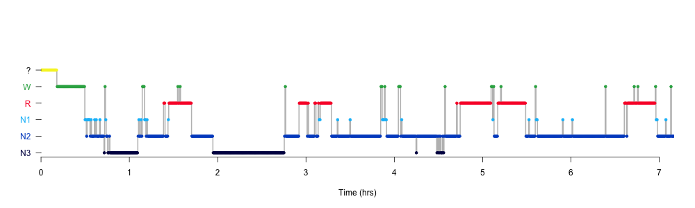
Here we have a loop to generate hypnograms for all 20 individuals:
ids <- unique( d$ID )
par(mfcol=c(10,2) , mar=c(3,3,1,1) )
for (id in ids)
{
stgs <- d$STAGE[ d$ID == id ]
times <- d$MINS[ d$ID == id ] * 60
lhypno( stgs , times = times )
}
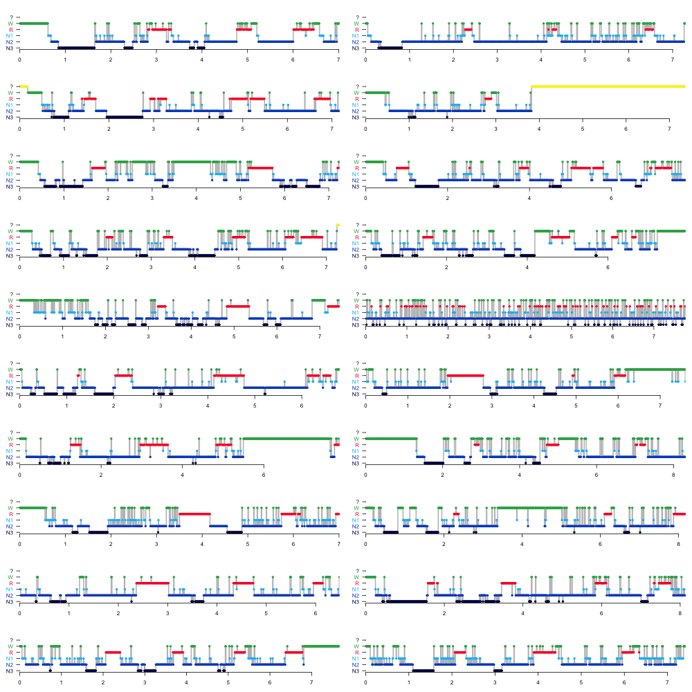
The 10 females are in the left column; the 10 males are in the right column. Note some of these hypnograms reflect the manipulations introduced (e.g. truncations, scrambling epochs, etc) -- we'll explore some of these issues in the next section.
Epoch-level statistics
From the previous run of HYPNO, there are also a number of
epoch-level statistics that can be used in analyses or for
visualization, as below in this quick prototype of an epoch-level
per-subject visualization of these stats:
# toy function to viz. epoch-level statistics
f1 <- function(d) {
par(mfcol=c(9,1) , mar=c(0.5,4,1,1) )
# stages
plot( d$MINS, d$STAGE_N , pch=20, col = lstgcols( d$STAGE) ,
xlab="Elapsed time (mins)" , ylab="Stage code" , xaxt='n', yaxt='n')
# persistent sleep [black] (vs WASO [green] vs fragmented sleep [gray])
plot( d$MINS, d$PERSISTENT_SLEEP , pch=20,
col=ifelse( d$WASO , lstgcols("W") ,
ifelse( d$PERSISTENT_SLEEP , "black" , "gray" ) ),
xlab="Elapsed time (mins)" , ylab="Persistent sleep" ,
xaxt='n', yaxt='n', ylim = c(-0.2,1.2) )
# markers of pre/post and main sleep period [ green / black / red respectively ]
plot( d$MINS, 0.66 + d$SPT/4 , pch=20, col = "black" ,
xlab="Elapsed time (mins)" , ylab="Pre/SPT/post" ,
type="l" , lwd=2, ylim=c(0,1), yaxt='n',xaxt='n')
lines( d$MINS, 0.33 + d$PRE/4 , pch=20, col = "green" ,lwd=2)
lines( d$MINS, 0 + d$POST/4 , pch=20, col = "red" ,lwd=2)
# cumulative elapsed sleep duration (default Luna stage colors, i.e. red = REM)
plot( d$MINS , d$PCT_E_N1 , col = lstgcols("N1") ,
type="l" , lwd=1.5 ,xaxt='n',
xlab="Elapsed time (mins)" , ylab="Cumulative %" , yaxt='n' )
lines( d$MINS , d$PCT_E_N2 , col = lstgcols("N2") , lwd=1.5)
lines( d$MINS , d$PCT_E_N3 , col = lstgcols("N3") , lwd=1.5)
lines( d$MINS , d$PCT_E_R , col = lstgcols("R") , lwd=1.5)
# cumulative elapsed stage proportions
plot( d$MINS , d$E_N2 , col = lstgcols("N2"),
type="l" , lwd=1.5 ,xaxt='n' , yaxt='n',
xlab="Elapsed time (mins)" , ylab="Cumulative mins" )
lines( d$MINS , d$E_N1 , col = lstgcols("N1") , lwd=1.5)
lines( d$MINS , d$E_N3 , col = lstgcols("N3") , lwd=1.5)
lines( d$MINS , d$E_R , col = lstgcols("R") , lwd=1.5)
# NREM cycle number
plot( d$MINS, d$CYCLE , pch=20, col = d$CYCLE ,
xlab="Elapsed time (mins)" ,xaxt='n', ylab="Sleep cycle" )
# position within sleep cycle
plot( d$MINS, d$CYCLE_POS_ABS , pch=20, col = d$CYCLE ,
xlab="Elapsed time (mins)" ,xaxt='n', ylab="Cycle position" )
# number of similar flanking epochs (merges NR epochs; color by sleep stage)
plot( d$MINS, d$FLANKING ,
col = lstgcols( d$STAGE), pch=20,xaxt='n',
xlab="Elapsed time (mins)" , ylab="Flanking epochs" )
# countdown of transitions from NR to R (in number of epochs)
plot( d$MINS[ d$TR_NR2R > 0 ], d$TR_NR2R[ d$TR_NR2R > 0 ] ,
pch=20, xlim=range(d$MINS),
xlab="Elapsed time (mins)", ylab="NR-to-R" )
}
f1( d[ d$ID == "M04" , ] )
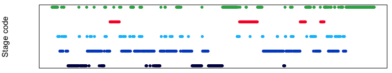
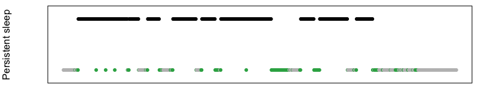
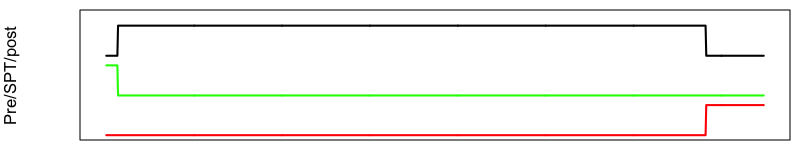
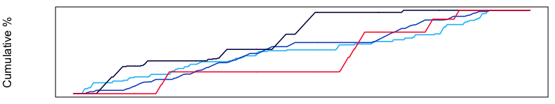
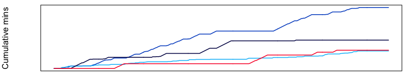
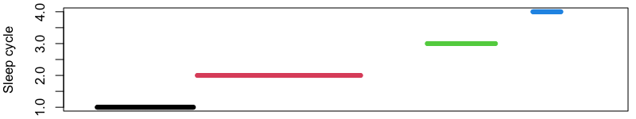
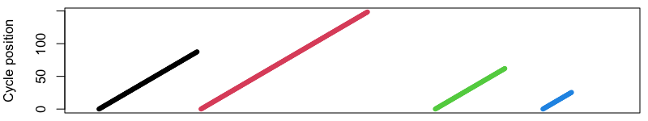
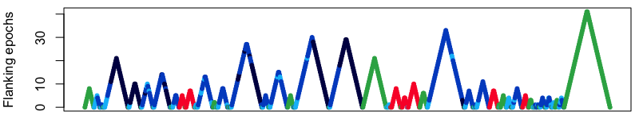
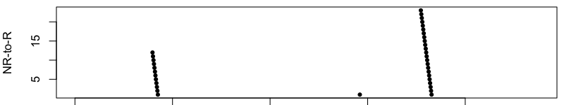
Each of the plots above show various epoch-level metrics that are
output from the HYPNO epoch command. By themselves, these are likely not
directly interpretable as output, but this type of output can form a useful intermediate;
for example, one could imagine selecting intervals of sleep that have at
least N similar flanking epochs, e.g. to avoid edge effects around
transitions, etc., based on the above types of metrics, and intersecting that list
of epochs with other epoch-level outputs from EEG-based analyses.
It is also easy to modify, improve and augment the above types of functions to generate bespoke summaries for studies as desired.
Having briefly reviewed hypnogram-based statistics, let's take a step backwards and ask: do the hypnograms we've been reviewing appear to be "good quality" in any case? At least, are the broadly consistent ("aligned with") the underlying (EEG) signal data used to generate them? For this, we'll introduce the SOAP command next.